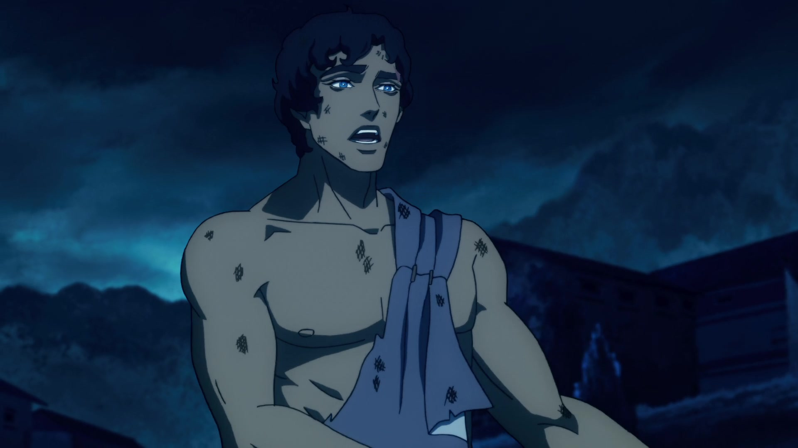
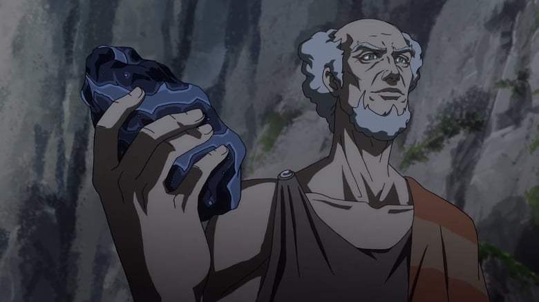
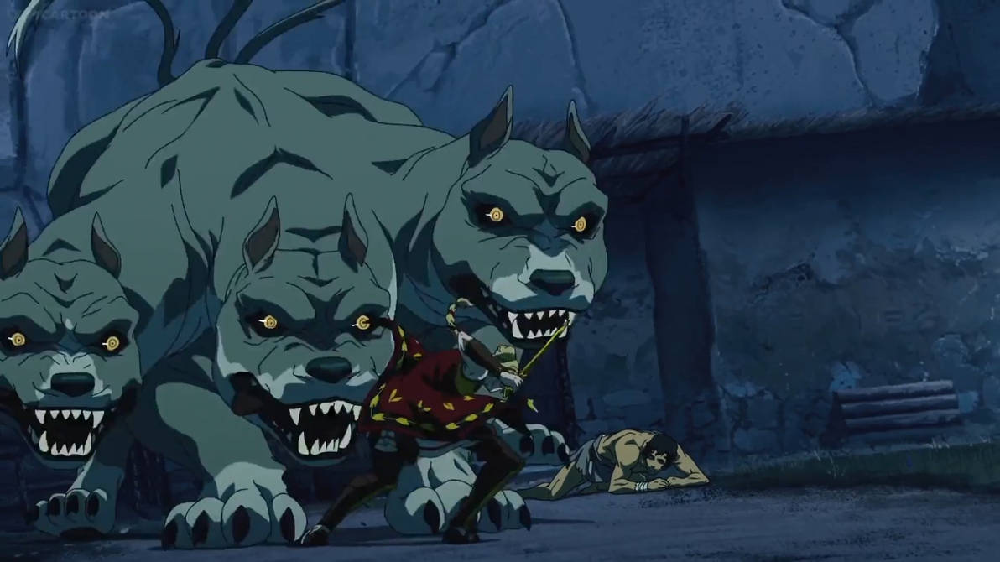
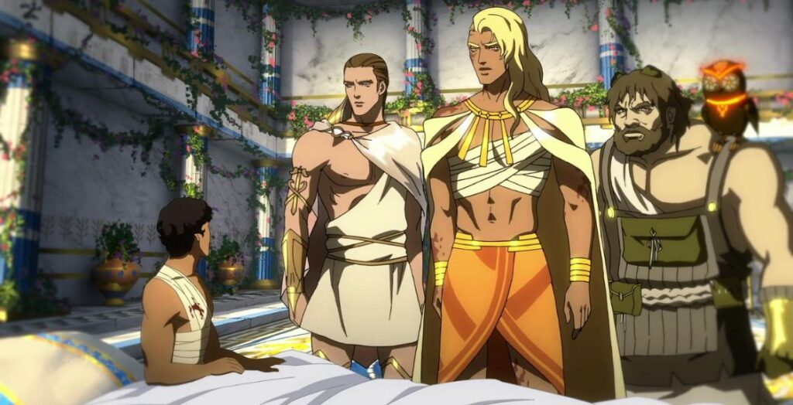
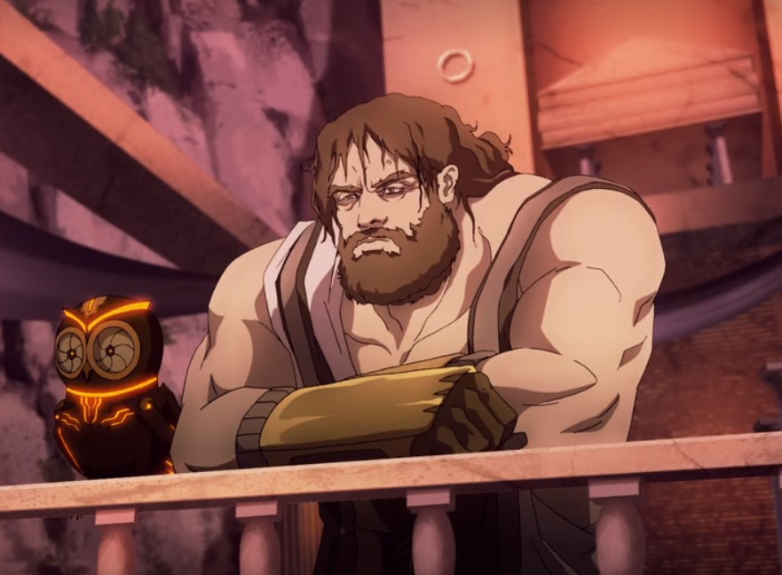
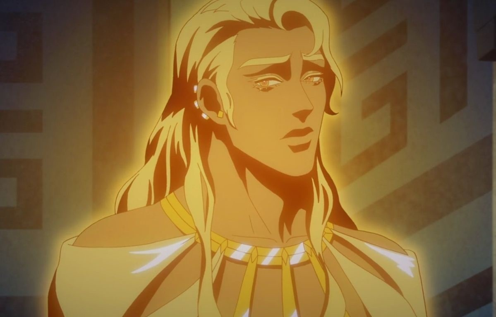
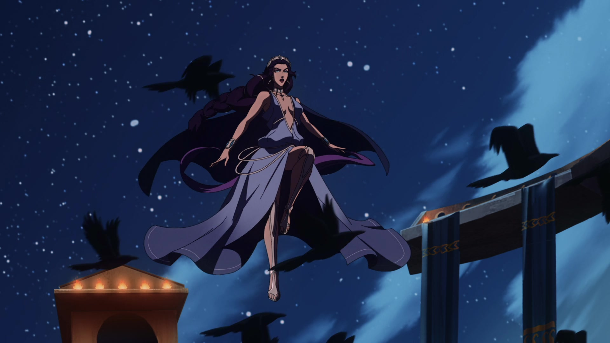
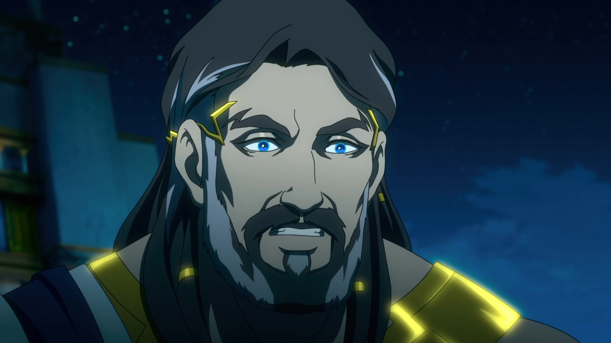
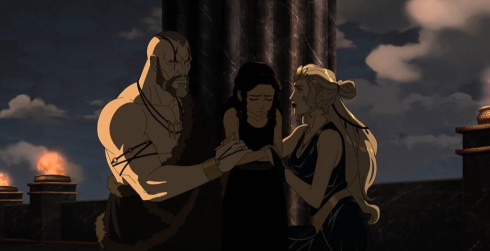

Galería:









X

Blood of Zeus (T1) cuenta la historia de Heron, un mortal que descubre ser hijo de Zeus y que debe enfrentarse a demonios y dioses en una batalla épica por el destino de la humanidad.
Los demonios atacan la polis cerca de la casa del paria Heron, quien encuentra aliados en el sabio anciano Elias y la guerrera amazona, Alexia.
Después de completar una búsqueda de mineral de adamantina, Heron descubre la verdad sobre su nacimiento de su madre, Electra, así como la identidad de su padre.
La diosa Hera descubre la existencia del hijo bastardo de Zeus, Herón, y jura venganza. La polis cae en manos de los malvados Serafines.
Heron es tomado prisionero por el ejército de Seraphim, que persigue a Alexia pero en su lugar se encuentra con Hera. La diosa informa al líder demonio de su verdadero pasado.
Hera le indica a Serafín la poderosa espada que Zeus forjó para Herón, quien se encuentra esclavizado a bordo de una galera. Alexia busca el consejo de su mentor, Quirón.
Zeus lleva a Heron al Olimpo para entrenarlo, lo que enfurece a los demás dioses. Alexia se embarca en una misión a Melidoni con los compañeros de Heron, Evios y Kofi.
La lealtad de Seraphim se pone a prueba cuando Zeus revela los engaños de Hera. La compañía de Alexia cruza los Campos de los Muertos. Estalla la guerra entre los dioses.
Hera resucitó a los gigantes del mar y atacó el Olimpo, lo que dio lugar a una batalla trascendental para la historia y al surgimiento de un nuevo semidiós: Heron.
La historia comienza en la antigua Grecia, donde un joven llamado Herón vive como un marginado en un pueblo acosado por demonios. Desde niño ha sido rechazado junto a su madre Electra, y ambos sobreviven apenas en una sociedad hostil. En paralelo, descubrimos que estos demonios son en realidad humanos transformados tras consumir la carne de Gigantes antiguos, criaturas surgidas de la sangre derramada por los Titanes derrotados. Estos Gigantes son una amenaza que pone en riesgo a dioses y humanos, y uno de los demonios más poderosos, Serafim, lidera una serie de ataques brutales.
Pronto, se revela que Zeus, el rey de los dioses, tuvo una aventura con Electra, y Herón es en realidad su hijo. Zeus, en un intento de protegerlo de la ira de su esposa Hera, ha mantenido la identidad de Herón en secreto. Mientras tanto, Hera, furiosa por la traición de Zeus, conspira para vengarse tanto de él como de su hijo. Zeus, quien siente una profunda conexión con Herón, desobedece las leyes divinas al intervenir en los asuntos humanos, ayudando a Herón en momentos clave y revelándole su origen divino.
Herón, ahora consciente de su herencia y de su destino, es lanzado a un camino de entrenamiento y autodescubrimiento. A lo largo de su viaje, se cruza con la guerrera amazona Alexia, quien lucha por proteger a la humanidad de los demonios. Con su ayuda, Herón aprende a usar sus habilidades y a enfrentar la oscuridad que amenaza con destruir el mundo. Mientras tanto, Zeus enfrenta la ira de Hera y otros dioses que cuestionan su favoritismo hacia los humanos, y en particular hacia Herón.
Serafim emerge como el principal antagonista humano, impulsado por un pasado trágico y resentimiento hacia los dioses y la sociedad. A medida que se desarrolla la historia, se revela que Serafim es en realidad el medio hermano de Herón, fruto de la misma relación prohibida entre Zeus y Electra, lo que intensifica el conflicto entre ellos. Serafim, consumido por el odio y el poder demoníaco, lleva adelante una serie de ataques contra Herón y sus aliados, con la intención de destruir a quienes le han causado dolor y de ganar poder en este nuevo mundo caótico.
El conflicto escala al Monte Olimpo cuando Hera, buscando venganza, decide desafiar a Zeus abiertamente y se alía con los Gigantes para desencadenar una guerra contra él. Zeus se ve obligado a defender tanto a su familia mortal como a sus aliados divinos. La batalla se intensifica a medida que los dioses se dividen, algunos apoyando a Zeus y otros a Hera. En la guerra que se desata, los dioses muestran la magnitud de sus poderes, y Zeus, con la ayuda de Hermes y otros aliados, se enfrenta a la traición de aquellos que lo han rechazado.
En un enfrentamiento épico, Herón se enfrenta a Serafim, y sus destinos se cruzan de una manera trágica, ya que ambos representan las consecuencias del conflicto de los dioses. Durante esta pelea, Herón finalmente acepta su identidad como hijo de Zeus y decide abrazar su destino, haciendo uso de su herencia divina para enfrentar a Serafim y proteger el mundo de la destrucción inminente.
En la batalla final en el Monte Olimpo, los dioses y los Gigantes luchan ferozmente, con Herón, Alexia y otros héroes uniéndose a la lucha. Al final, Zeus se sacrifica para salvar a Herón y poner fin a la guerra entre los dioses y los Gigantes, dejando a Herón con un sentimiento de pérdida pero con una nueva comprensión de su propósito y de la responsabilidad que su herencia divina conlleva.
La temporada culmina con Herón asumiendo su rol de héroe y defensor de la humanidad, consciente de que, aunque el conflicto entre los dioses ha cesado, nuevas amenazas podrían surgir. La guerra entre el Olimpo y los demonios marca su transformación, y él y sus aliados se preparan para cualquier desafío futuro que podría poner en riesgo la paz frágil que han logrado alcanzar.
Hades planea robar una piedra poderosa del templo de Zeus mientras se desata la batalla por el Olimpo. Gea le ordena a Heron que salve a un antiguo adversario.
Seraphim enfrenta un duro juicio en el Inframundo y recibe una oferta inesperada de Hades, quien revela el verdadero origen de la Piedra Eleusis.
Heron busca la guía del dios herrero Hefesto. Para ganarse la lealtad de Serafín, Hades lo tienta con la promesa de traer la paz a un amor perdido.
Mientras lloran la muerte de su rey, los inmortales honran a Zeus con juegos festivos. Pero la competencia entre Ares y Heron se torna brutalmente violenta.
Zeus es sentenciado a su destino en el inframundo mientras Heron visita la tierra que lo vio nacer. Impulsado por la venganza, Seraphim desata su ira contra un enemigo.
Heron y sus compañeros luchan contra un enjambre de Keres y se encuentran con un viajero sorprendente en su camino. Deméter hace una audaz apuesta por el poder.
Con la ayuda de una flota amazónica, Heron, Alexia y Kofi se enfrentan al autómata gigante Talos. Para entrar en el Reino Oculto, Seraphim primero debe ser más astuto que los Curetes.
Con la corona del Olimpo en juego, los dioses chocan espadas en una batalla épica por la Piedra Eleusis y el poder que otorga a quien la posee.
La historia comienza en la antigua Grecia, donde un joven llamado Herón vive como un marginado en un pueblo acosado por demonios. Desde niño ha sido rechazado junto a su madre Electra, y ambos sobreviven apenas en una sociedad hostil. En paralelo, descubrimos que estos demonios son en realidad humanos transformados tras consumir la carne de Gigantes antiguos, criaturas surgidas de la sangre derramada por los Titanes derrotados. Estos Gigantes son una amenaza que pone en riesgo a dioses y humanos, y uno de los demonios más poderosos, Serafim, lidera una serie de ataques brutales.
Pronto, se revela que Zeus, el rey de los dioses, tuvo una aventura con Electra, y Herón es en realidad su hijo. Zeus, en un intento de protegerlo de la ira de su esposa Hera, ha mantenido la identidad de Herón en secreto. Mientras tanto, Hera, furiosa por la traición de Zeus, conspira para vengarse tanto de él como de su hijo. Zeus, quien siente una profunda conexión con Herón, desobedece las leyes divinas al intervenir en los asuntos humanos, ayudando a Herón en momentos clave y revelándole su origen divino.
Herón, ahora consciente de su herencia y de su destino, es lanzado a un camino de entrenamiento y autodescubrimiento. A lo largo de su viaje, se cruza con la guerrera amazona Alexia, quien lucha por proteger a la humanidad de los demonios. Con su ayuda, Herón aprende a usar sus habilidades y a enfrentar la oscuridad que amenaza con destruir el mundo. Mientras tanto, Zeus enfrenta la ira de Hera y otros dioses que cuestionan su favoritismo hacia los humanos, y en particular hacia Herón.
Serafim emerge como el principal antagonista humano, impulsado por un pasado trágico y resentimiento hacia los dioses y la sociedad. A medida que se desarrolla la historia, se revela que Serafim es en realidad el medio hermano de Herón, fruto de la misma relación prohibida entre Zeus y Electra, lo que intensifica el conflicto entre ellos. Serafim, consumido por el odio y el poder demoníaco, lleva adelante una serie de ataques contra Herón y sus aliados, con la intención de destruir a quienes le han causado dolor y de ganar poder en este nuevo mundo caótico.
El conflicto escala al Monte Olimpo cuando Hera, buscando venganza, decide desafiar a Zeus abiertamente y se alía con los Gigantes para desencadenar una guerra contra él. Zeus se ve obligado a defender tanto a su familia mortal como a sus aliados divinos. La batalla se intensifica a medida que los dioses se dividen, algunos apoyando a Zeus y otros a Hera. En la guerra que se desata, los dioses muestran la magnitud de sus poderes, y Zeus, con la ayuda de Hermes y otros aliados, se enfrenta a la traición de aquellos que lo han rechazado.
En un enfrentamiento épico, Herón se enfrenta a Serafim, y sus destinos se cruzan de una manera trágica, ya que ambos representan las consecuencias del conflicto de los dioses. Durante esta pelea, Herón finalmente acepta su identidad como hijo de Zeus y decide abrazar su destino, haciendo uso de su herencia divina para enfrentar a Serafim y proteger el mundo de la destrucción inminente.
En la batalla final en el Monte Olimpo, los dioses y los Gigantes luchan ferozmente, con Herón, Alexia y otros héroes uniéndose a la lucha. Al final, Zeus se sacrifica para salvar a Herón y poner fin a la guerra entre los dioses y los Gigantes, dejando a Herón con un sentimiento de pérdida pero con una nueva comprensión de su propósito y de la responsabilidad que su herencia divina conlleva.
La temporada culmina con Herón asumiendo su rol de héroe y defensor de la humanidad, consciente de que, aunque el conflicto entre los dioses ha cesado, nuevas amenazas podrían surgir. La guerra entre el Olimpo y los demonios marca su transformación, y él y sus aliados se preparan para cualquier desafío futuro que podría poner en riesgo la paz frágil que han logrado alcanzar.
1- Electra era princesa de Micenas, contemporanea a la Guerra de Troya, en la que su padre Agamenón sacrifica a su propia hija, para que los dioses ayuden a terminar la guerra, tiempo despues Clitemnestra traiciona (o en represalia) a su esposo. Electra y su hermano, Orestes continuan el derramamiento de sangre familiar matando a su madre.
2- Ni Seraphin ni los demonios tienen que ver con la mitología griega; puede hacer referencia a la biblia en la que se refiere a los Serafines como una "categoria de los angeles" mas cercanos a Dios. De igual modo tampoco existe ningún héroe o semidiós llamado Herón relacionado con Zeus en los mitos griegos (solo un ingeniero, inventor y matematico en Alejandría)
3- Los gigantes son famosos por la Gigantomaquia, la batalla que libraron contra los dioses olímpicos por el dominio del cosmos. En esta guerra, los gigantes fueron creados por Gea para vengar a los titanes, de los dioses olímpicos. Estos no generan demonios ni transforman humanos.
4- Caractersticas, importancia, roles y lealtades de los personajes secundarios son discutios en la mitología, por lo que se entiende la decisión de libertad creativa.
Redes Sociales:
Teléfono: +43 011 98765432
Email: contacto@example.com